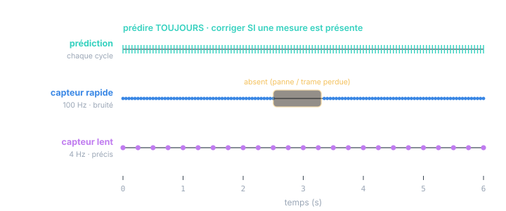
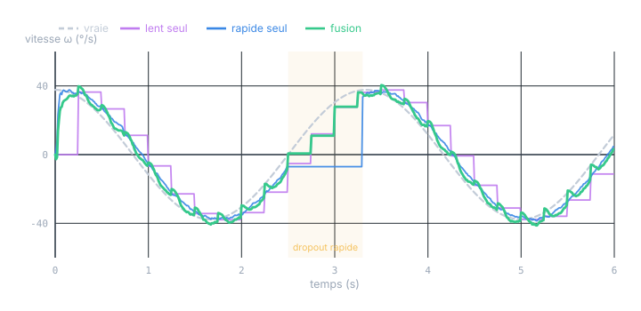

Chapitre 13 · Application
Fusion multi-fréquences : capteurs à cadences différentes
Objectifs du chapitre
- Comprendre le rythme fondamental : prédire toujours, corriger quand une mesure arrive.
- Voir pourquoi il ne faut ni ré-échantillonner le rapide ni « tenir » la valeur du lent.
- Fusionner plusieurs capteurs par mises à jour scalaires séquentielles (chacun son H, son R).
- Lire la « respiration » de la covariance et s'en servir pour diagnostiquer et gater.
- Gérer les cas subtils : pas de temps variable, mesures en retard, aberrants — et la structure sur PLC.
1. Le rythme : prédire toujours, corriger si disponible
L'idée qui débloque tout : dans le filtre de Kalman, prédiction et correction sont deux étapes séparées (chapitres 6 et 7). Rien n'oblige à les faire ensemble. On peut donc prédire à chaque cycle (à la cadence rapide de l'OB) et n'appliquer une correction que lorsqu'une mesure est effectivement présente — quelle que soit sa cadence.

Ce découplage règle d'un coup trois problèmes qu'on croit souvent distincts :
- Cadences différentes : chaque capteur corrige à son propre rythme.
- Mesures manquantes : on saute la correction, on laisse la prédiction seule faire avancer l'état — P croît, honnêtement.
- Arrivées irrégulières : peu importe quand une mesure tombe, on la traite au cycle où elle arrive.
Le filtre ne « perd » jamais les cycles sans mesure : il continue de propager l'état par le modèle. Un capteur lent n'est donc pas « en retard » — entre deux de ses mesures, c'est le modèle (et les autres capteurs) qui tiennent l'estimation à jour. Le capteur lent n'a qu'à recaler de temps en temps.
2. Ni ré-échantillonner, ni « tenir » la valeur
Face à des cadences différentes, deux réflexes naïfs — et tous deux nuisibles.
Ré-échantillonner le rapide à la cadence lente (ne garder qu'un point sur N) jette de l'information : tout ce que le capteur rapide voyait entre deux points lents est perdu. On paie un capteur rapide pour ne pas s'en servir.
« Tenir » (bloquer) la dernière valeur du lent et l'injecter à chaque cycle rapide comme si elle était fraîche est pire : on présente N fois la même mesure comme N mesures indépendantes. Le filtre croit recevoir N fois plus d'information qu'en réalité, sous-estime son incertitude, devient trop sûr de lui — et l'innovation cesse d'être blanche (chapitre 8). C'est une violation directe de l'hypothèse d'indépendance.
« Tenir » une mesure lente (zero-order hold) et la traiter comme neuve à chaque cycle est l'erreur la plus commune de la fusion multi-cadence. Elle ne provoque pas de plantage — juste un filtre silencieusement surconfiant, que le test de cohérence (NIS > 1, chapitre 12) démasque. La bonne réponse est de ne corriger qu'aux instants où une vraie mesure arrive.
3. Fusionner plusieurs capteurs : mises à jour scalaires séquentielles
Chaque capteur a sa propre relation à l'état — sa matrice d'observation Hᵢ — et son propre bruit Rᵢ. Deux inclinomètres d'angle : H = [1, 0] chacun, mais R différents. Un capteur d'angle et un capteur de vitesse : H = [1, 0] pour l'un, H = [0, 1] pour l'autre. Le filtre les fusionne automatiquement, en pondérant chacun par sa précision — c'est H et R qui font tout, aucune logique de fusion à écrire.
Quand plusieurs mesures tombent au même cycle, on les applique l'une après l'autre : corriger avec la première, puis re-corriger le résultat avec la seconde. Si leurs bruits sont indépendants (R globale diagonale), l'ordre n'a aucune importance et le résultat est identique à une mise à jour vectorielle unique — mais chaque étape n'inverse qu'un scalaire S, jamais une matrice. C'est le mode de fusion idéal sur automate (chapitre 12).
// SCL — un cycle de fusion multi-fréquences (état [θ, ω]).
// availFast / availSlow : drapeaux positionnés quand une mesure est fraîche.
// --- 1) Prédiction : TOUJOURS ---
CALL kf_predict; // x⁻ = F·x + B·u ; P⁻ = F·P·Fᵀ + Q
// --- 2) Corrections : chacune SI sa mesure est présente ---
IF #availFast THEN
kf_update(z := #zFast, R := #Rfast, h0 := 1.0, h1 := 0.0); // H=[1 0]
#availFast := FALSE; // consommer le drapeau
END_IF;
IF #availSlow THEN
kf_update(z := #zSlow, R := #Rslow, h0 := 1.0, h1 := 0.0); // capteur précis
#availSlow := FALSE;
END_IF;
#omEstime := #om; // sortie, à jour à la cadence rapide
Chaque appel kf_update est la mise à jour scalaire du chapitre 11 (une division par
S, pas d'inversion). Ajouter un troisième capteur, c'est ajouter un
IF … kf_update(…) — la structure ne grossit pas, elle s'allonge d'une ligne. On peut aussi
gater ici : n'appliquer la correction que si l'innovation passe un seuil de NIS (§6).
4. La covariance respire au rythme des mesures
Voici le plus bel effet de la fusion multi-cadence, et un outil de diagnostic gratuit. L'incertitude du filtre — l'écart-type √P₀₀ sur l'angle — monte à chaque prédiction et descend à chaque correction. Avec des capteurs de cadences et de précisions différentes, cela dessine une dent de scie révélatrice.
![Écart-type de l'estimation d'angle (racine de P00) en fonction du temps, sur 6 secondes. La courbe est une dent de scie : elle monte doucement entre les corrections et chute à chaque mise à jour. En régime nominal les dents sont petites (autour de 0,25°). Entre 2,5 et 3,3 s, dans une zone ombrée marquée 'capteur rapide absent', les dents deviennent nettement plus grandes (jusqu'à ~1,1°) car seules les rares mises à jour lentes recalent le filtre, puis elles redeviennent petites une fois le capteur rapide revenu.](figures/fig-multi-band.svg)
Cette respiration n'est pas un défaut : c'est le filtre qui dit honnêtement « je suis moins sûr en ce moment ». Un système en aval peut lire ce P pour décider — ralentir un mouvement quand l'incertitude monte, déclencher une alarme si elle dépasse un seuil, pondérer une commande. C'est une des raisons de garder le filtre complet plutôt qu'un gain constant (chapitre 12) : l'incertitude vivante est exploitable.
5. Fusion vs source unique
Que gagne-t-on vraiment ? Comparons, sur la vitesse estimée, le filtre fusionné à deux filtres n'utilisant qu'une source.

C'est l'intuition du filtrage complémentaire, rendue optimale par Kalman : le capteur rapide fournit le détail et la réactivité (hautes fréquences), le capteur lent fournit l'ancrage et la précision absolue (basses fréquences). Le filtre combine les deux bandes automatiquement, via Q, R et les cadences — sans qu'on ait à concevoir le moindre filtre passe-haut/passe-bas.
6. Les cas subtils
6.1 Pas de temps variable (gigue, événementiel)
Si les mesures n'arrivent pas à intervalle régulier — échantillonnage événementiel, gigue réseau — alors dt change d'un pas à l'autre. Il faut recalculer F(dt) et Q(dt) avec le dt réellement écoulé (mesuré par horodatage), à chaque prédiction. C'est précisément ce qui casse l'hypothèse LTI du régime permanent : le gain n'est plus constant, et l'on a besoin du filtre complet.
// SCL — prédiction à pas variable : F et Q recalculés avec le dt réel.
#dt := (#tNow - #tPrev); // horodatage → temps écoulé réel
#tPrev := #tNow;
// F(dt)
th_p := #th + #om*#dt; om_p := #om;
// Q(dt) = σα²·[[dt⁴/4, dt³/2],[dt³/2, dt²]] (recalculé à chaque pas)
q00 := #sa2*(#dt*#dt*#dt*#dt)/4.0;
q01 := #sa2*(#dt*#dt*#dt)/2.0;
q11 := #sa2*(#dt*#dt);
// … puis P⁻ = F·P·Fᵀ + Q comme d'habitude6.2 Mesures en retard (hors séquence)
Un capteur lent (vision, calcul long) peut livrer une valeur datée du passé : elle décrit l'état d'il y a quelques cycles, mais n'arrive que maintenant. Si la latence est inférieure à un cycle rapide, on la traite comme actuelle sans dommage. Sinon, il faut de la rétrodiction : garder en mémoire l'état à l'instant de la mesure, l'y corriger, puis re-propager jusqu'au présent. On l'a évoqué au chapitre 11 pour le temps mort ; c'est le même mécanisme, déclenché à l'arrivée d'une mesure hors séquence.
6.3 Rejet d'aberrants (gating) par la NIS
Avec plusieurs capteurs, l'un peut délivrer une valeur fausse (décrochage, reflet, glitch). On la filtre avant de corriger, par un test de NIS sur son innovation (chapitre 12) : si yᵀ S⁻¹ y dépasse un seuil du χ² (par exemple la valeur à 99 %), la mesure est jugée incohérente et rejetée — on saute sa correction. C'est un filet de sécurité capital en fusion, et il exige la valeur vivante de S : encore une raison du filtre complet.
Le gating est une arme à double tranchant : un seuil trop serré rejette de bonnes mesures (le filtre s'aveugle et diverge lentement), trop lâche il laisse passer les aberrants. On le règle sur des données réelles, et l'on compte les rejets : un capteur dont les mesures sont massivement gatées n'est pas « filtré », il est en panne — mieux vaut le signaler que le masquer.
7. La structure sur PLC
On assemble tout dans le FB appelé à la cadence rapide : une prédiction inconditionnelle, puis une correction conditionnelle par capteur, pilotée par des drapeaux de disponibilité.
![Schéma d'implémentation. Dans un OB cyclique rapide appelé une fois par cycle, un bloc PRÉDIRE (toujours) alimente deux blocs de correction conditionnels : CORRIGER rapide (100 Hz, si dispo, update scalaire) et CORRIGER lent (4 Hz, si dispo, update scalaire), pilotés par des drapeaux de disponibilité par capteur. Les deux corrections mettent à jour l'état x, P et produisent la vitesse estimée. Un encart indique que si le rapport de fréquences est entier et fixe, le gain devient périodique et l'on peut précalculer un jeu de gains constants, un par phase du cycle.](figures/fig-multi-plc.svg)
Constant-gain périodique. Quand le lent tombe exactement tous les N cycles rapides, la séquence des gains de Kalman est périodique de période N : le gain du cycle « avec mesure lente » diffère de celui des N−1 cycles « sans ». On peut donc résoudre hors ligne (Riccati périodique) et n'embarquer que N jeux de gains constants, indexés par la phase du cycle. On garde la légèreté du gain constant (chapitre 12) en gérant le multi-cadence — tant que les cadences restent fixes. Dès qu'elles varient (§6.1) ou qu'il faut gater (§6.3), on revient au filtre complet.
Exercices
Exercice 1 — Le piège du « tenir la valeur »
Un collègue, pour « simplifier », bloque la dernière mesure du capteur lent et l'injecte à chaque cycle rapide comme une mesure normale. Son filtre a l'air plus lisse. Quel problème couve, et comment le détecter ?
Voir la solution
Il présente la même mesure N fois comme N mesures indépendantes → le filtre sur-estime l'information reçue, P chute trop, le filtre devient surconfiant. « Plus lisse » est en fait « trop sûr de lui » : il ignorera les vraies variations et pourra diverger. Détection : la NIS passe durablement au-dessus de 1 (chapitre 12), et l'innovation n'est plus blanche (autocorrélée à la période du capteur lent). Remède : ne corriger avec le lent qu'aux instants où il livre réellement une mesure fraîche.
Exercice 2 — Fusionner un capteur d'angle et un capteur de vitesse
On dispose, sur l'état [θ, ω], d'un inclinomètre (angle, 50 Hz) et d'un capteur de vitesse angulaire (100 Hz). Donnez les Hᵢ de chaque capteur et décrivez le cycle de fusion.
Voir la solution
L'inclinomètre voit l'angle : H_θ = [1, 0], R_θ = σθ². Le capteur de vitesse voit ω : H_ω = [0, 1], R_ω = σω². Chaque cycle (100 Hz) : prédire ; corriger avec la vitesse (présente chaque cycle) ; corriger avec l'angle un cycle sur deux (50 Hz). Deux mises à jour scalaires, dans l'ordre qu'on veut (bruits indépendants). Le capteur de vitesse rend ω directement observable — l'estimation de vitesse devient excellente, et l'angle intègre proprement une vitesse mesurée plutôt que dérivée. (C'est le principe de la fusion IMU, sujet du prochain chapitre.)
Récapitulatif
- Prédire toujours, corriger si disponible : prédiction et correction sont découplées → cadences différentes, mesures manquantes et arrivées irrégulières se gèrent d'un même mécanisme.
- Ni ré-échantillonner le rapide (perte d'info) ni « tenir » le lent (surconfiance, innovation non blanche) : ne corriger qu'aux vraies arrivées.
- Plusieurs capteurs = plusieurs (Hᵢ, Rᵢ), fusionnés par mises à jour scalaires séquentielles (ordre indifférent, aucune inversion).
- La covariance respire (dent de scie) : elle monte sans mesure, chute à chaque correction, gonfle pendant un dropout. Incertitude vivante = diagnostic + décision en aval.
- La fusion bat toute source unique : le rapide donne la réactivité, le lent l'ancrage (filtrage complémentaire optimal).
- Cas subtils : dt variable → recalculer F(dt), Q(dt) ; mesures en retard → rétrodiction ; aberrants → gating par NIS. Tous exigent le filtre complet.
- Sur PLC : prédire + corrections conditionnelles par drapeaux ; cadences entières fixes → gain périodique précalculable (extension du chapitre 12).
La suite. L'exercice 2 a ouvert la porte : fusionner un capteur d'angle et un capteur de vitesse, c'est déjà une mini-IMU. Le prochain chapitre appliqué combinera inclinomètre et gyromètre — complémentarité basses/hautes fréquences, estimation du biais de gyromètre dans l'état — puis abordera le non-linéaire concret (EKF/UKF) sur un cas d'attitude.